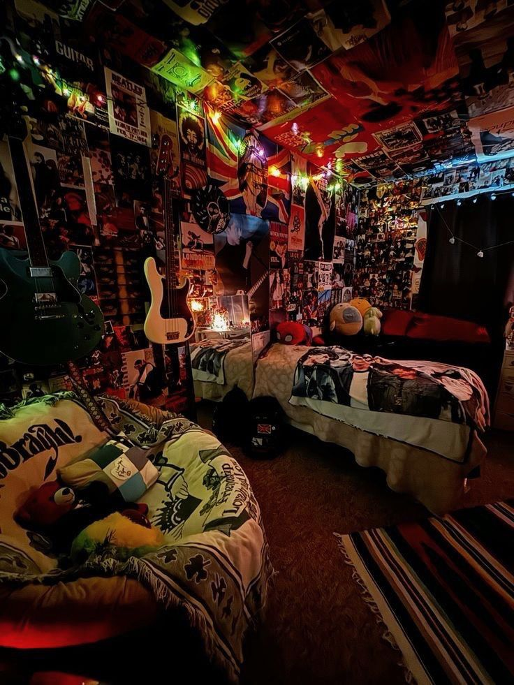
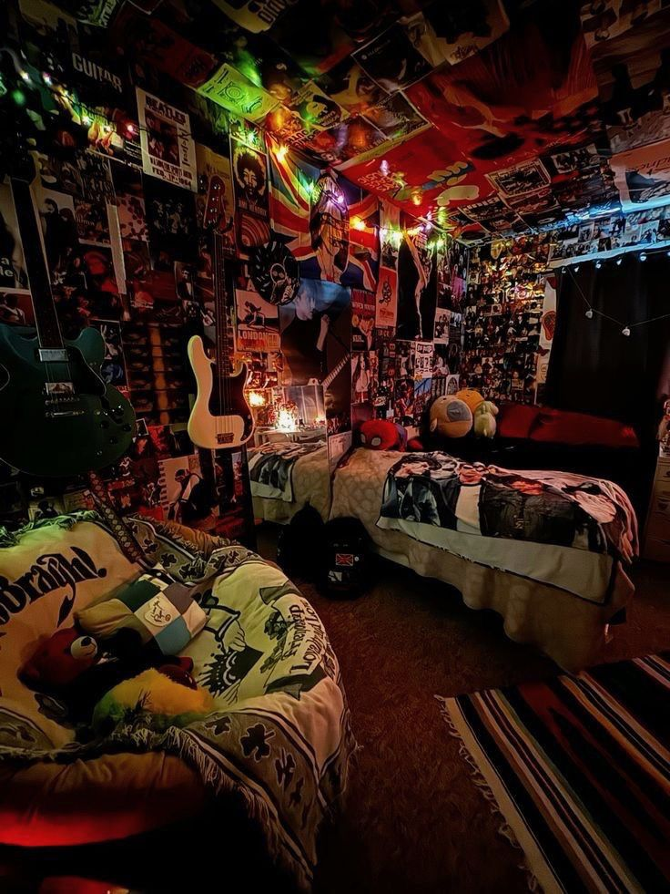

Y2K (Year 2000) — это эстетика конца 1990-х — начала 2000-х, сочетающая ретро-футуризм, кибер-оптимизм и яркую поп-культуру.
Характерные черты: металлические ткани, кислотные цвета, минималистичный дизайн гаджетов, блестки, полупрозрачные пластики, низкие джинсы, мелкая графика и футуристичные шрифты.
Стиль Y2K вернулся в моду в 2020-х как ностальгический тренд, вдохновляющий дизайнеров, музыкантов и digital-художников.

Яркие комбинезоны, кроп-топы, джинсы с низкой посадкой, металлические ткани и блестящие аксессуары.
Раскладушки, MP3-плееры, полупрозрачные компьютеры, мигающие LED-подсветки — дизайн, который вернулся!
Кислотные градиенты, пиксельные иконки, 3D-текст, глитч-эффекты — визуальный язык эпохи.
Бритни Спирс, *NSYNC, электро, евродэнс — музыкальные клипы с футуристичными спецэффектами.

PlayStation 2, ранний 3D-дизайн, аниме-стилистика, неоновые интерфейсы.

Вера в светлое технологичное будущее, летающие машины, голографические интерфейсы.
Расскажи о своём видении стиля Y2K или предложи коллаборацию!